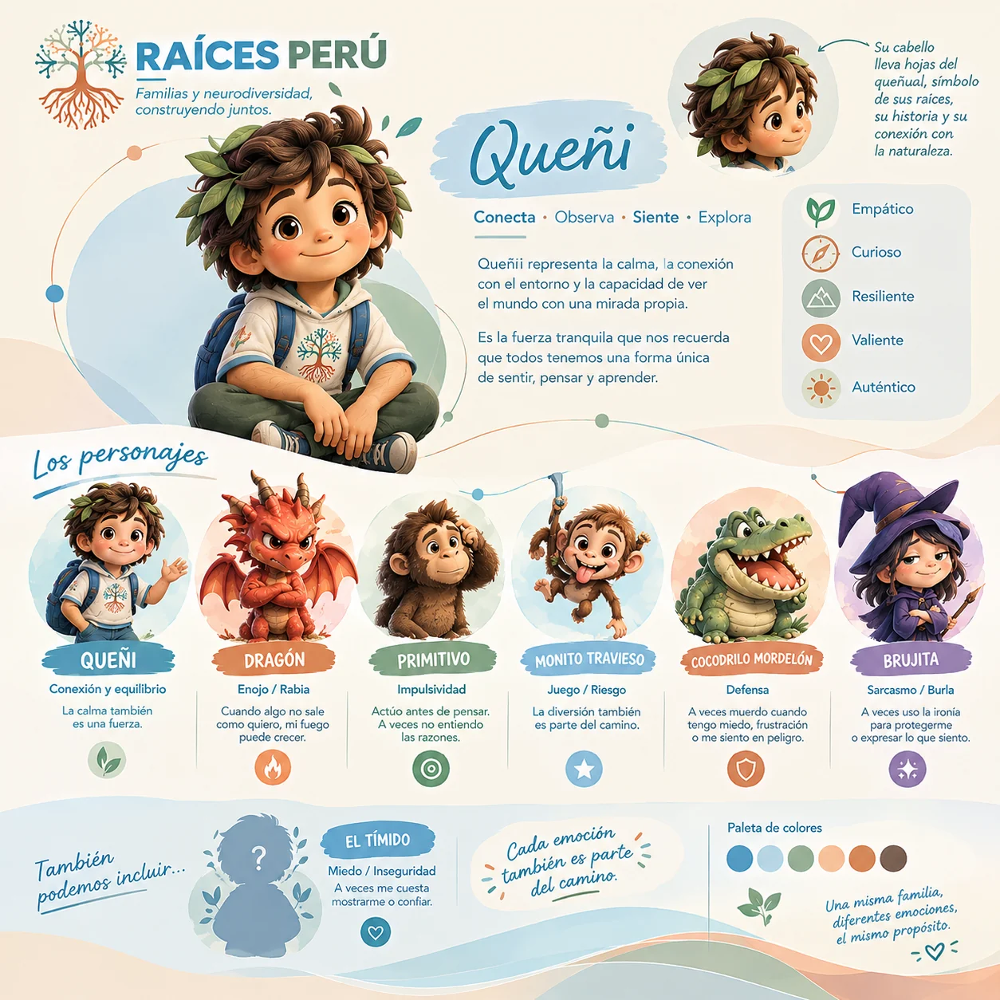
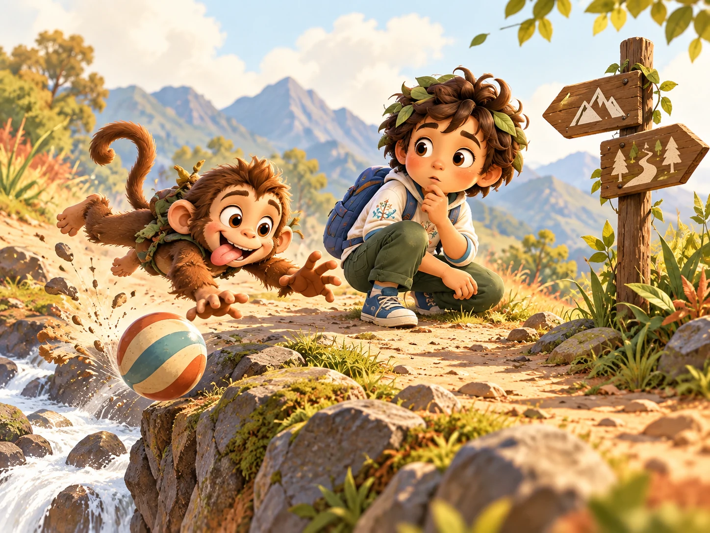
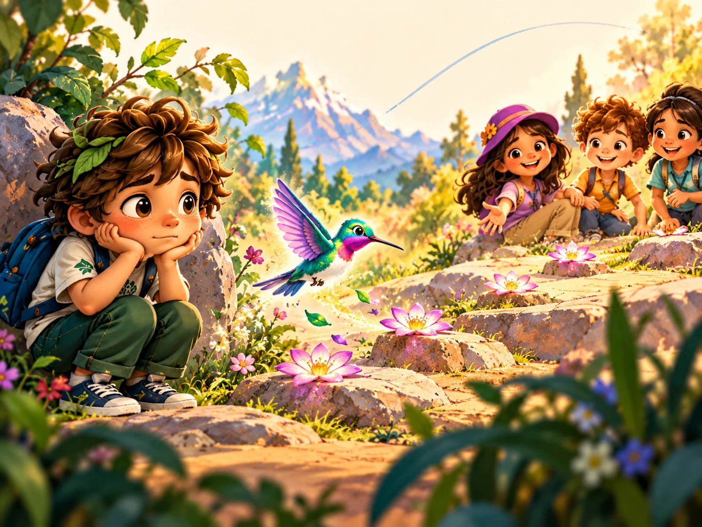
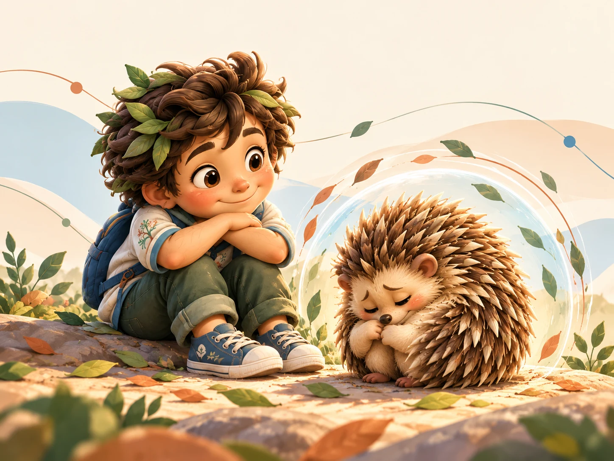
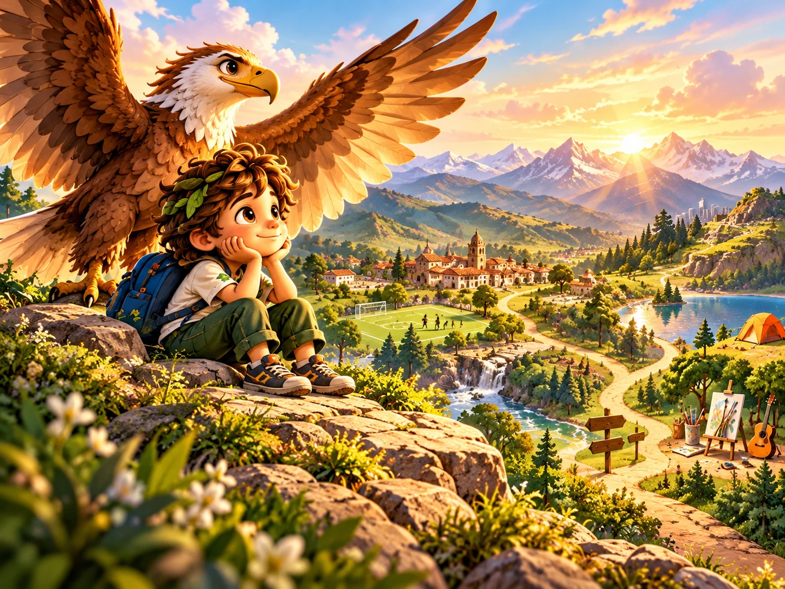
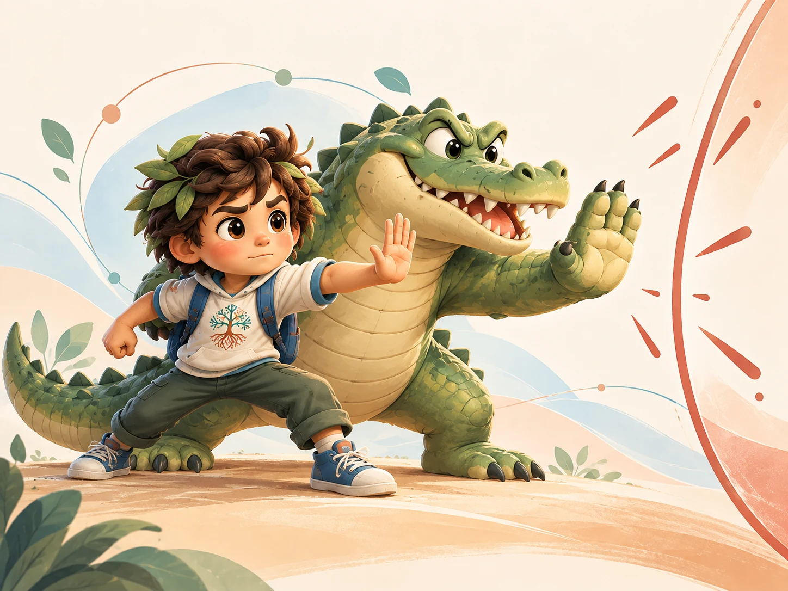
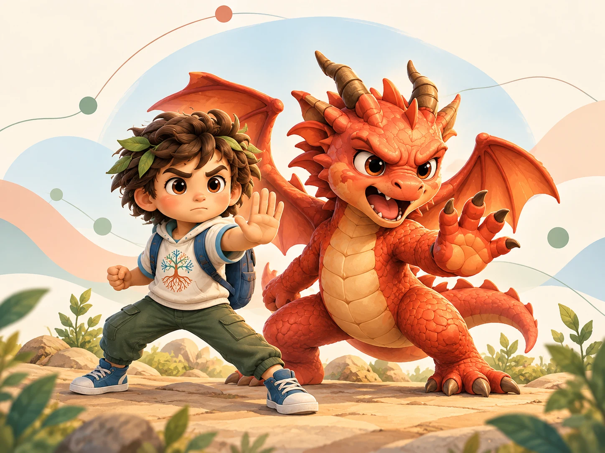
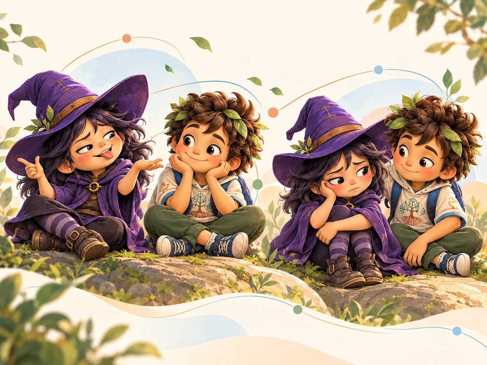
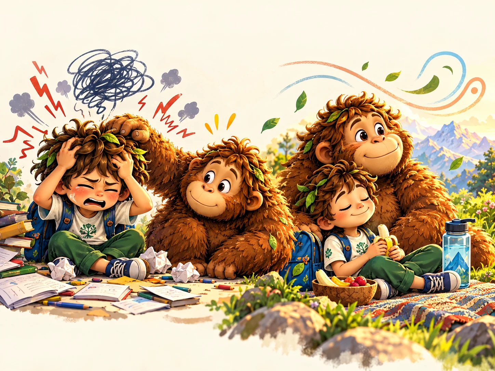
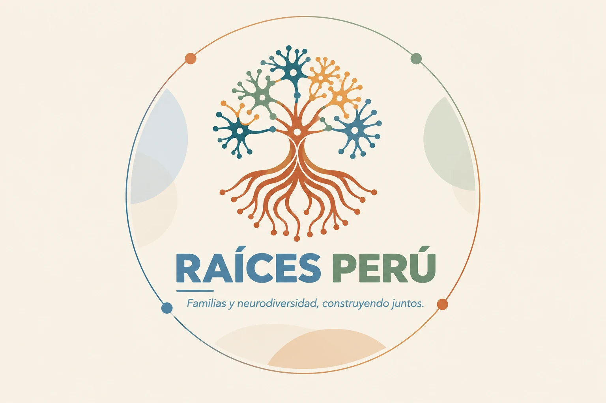

Biblioteca Activa RAÍCES
Explorar, probar, observar y volver a intentar.
Experiencias breves creadas para jugar con la atención, la memoria, el lenguaje, el movimiento y la autorregulación. Cada niña, niño o adolescente puede empezar en un nivel distinto y avanzar a su propio ritmo.
Elegir una estación
RAÍCES PERÚ · VISTA EN LÍNEAEstaciones interactivas
Elige qué quieres entrenar hoy
Todos los ejercicios funcionan en la página. No requieren descarga y llevan la identidad RAÍCES.
Edad
Dificultad

Planificación · orientación espacial
Laberinto del bosque
Encuentra la salida usando la menor cantidad de movimientos. Tres tamaños y controles táctiles.

Atención selectiva · velocidad
Detective visual
Encuentra el símbolo diferente entre distractores. El tablero cambia en cada ronda.

Memoria de trabajo · secuencias
Eco de colores
Observa una secuencia y repítela. Crece paso a paso, sin penalizar el error.

Pausa · respiración · cuerpo
Respirar con el árbol
Una guía visual de un minuto para notar el cuerpo antes de continuar.

Escucha · ambiente opcional
Laboratorio de sonido
Crea un ambiente suave de ruido filtrado o pulsos lentos desde el navegador.

Flexibilidad · clasificación
Cambia la regla
Clasifica primero por color y luego cambia a forma. El objetivo es adaptarse a una regla nueva.
Atención sostenida · discriminación
Encuentra al infiltrado
Observa una serie de letras, números o símbolos y descubre cuál rompe el patrón. Cada nivel aumenta los distractores.
Lectura · inferencia · comprensión
Historias con pistas
Lee un texto breve, encuentra información explícita y deduce lo que no se dice directamente.

Razonamiento · patrones · lógica
El siguiente paso
Completa secuencias, reconoce relaciones y explica cómo pensaste la respuesta.

Trazo · coordinación · precisión
Caminos de color
Sigue recorridos con el dedo o el puntero sin salirte del camino. Puedes elegir grosor y dificultad.

Secuencias · anticipación · lenguaje
Ordena la historia
Coloca escenas cotidianas en el orden que tiene sentido y luego cuéntalas con tus palabras.
Razonamiento espacial · rompecabezas
Mosaico RAÍCES
Reorganiza las piezas hasta reconstruir el patrón. Los niveles cambian la cantidad de partes.
No encontramos una estación con esos filtros. Prueba otra combinación.
Rutas por necesidad
No todo se practica de la misma manera
Estas rutas combinan experiencias digitales, conversación, movimiento y materiales RAÍCES.
Atención y funciones ejecutivas
Búsqueda visual, secuencias, cambio de regla, planificación, inhibición y retorno después de distraerse.
6–910–1213–17
Lectura y lenguaje
Preparación antes de leer, rutas graduadas, comprensión, vocabulario, oralidad y acompañamiento familiar.
Por edadesFamilias
Cuerpo y regulación
Respiración, propiocepción, coordinación, pausas, ritmo y reconocimiento de señales corporales.
MovimientoPausa
Memoria y aprendizaje
Memoria visual, auditiva y de trabajo; evocación, asociación y estrategias para organizar información.
GradualRevisable
Sonido y música
Escucha, ritmo, elección de ambientes y registro personal de qué ayuda, distrae o incomoda.
OpcionalSin promesas
Familia y escuela
Observación, comunicación, acuerdos, apoyos, documentación y revisión sin convertir la dificultad en culpa.
AdultosEntorno
Uso responsable del sonido
Una pista puede acompañar; no es un tratamiento.
Use volumen bajo, evite audífonos en niñas y niños pequeños y permita siempre elegir silencio. Detenga el audio si provoca molestia, dolor, mareo o sobrecarga. RAÍCES no afirma que una frecuencia cure, diagnostique o mejore por sí sola una condición.

Contenido protegido
Creado para acompañar, no para circular sin contexto.
Las actividades activas son originales de RAÍCES y se ofrecen para uso en línea. Los manuales completos, fichas y referencias privadas no se descargan ni se redistribuyen desde esta web.